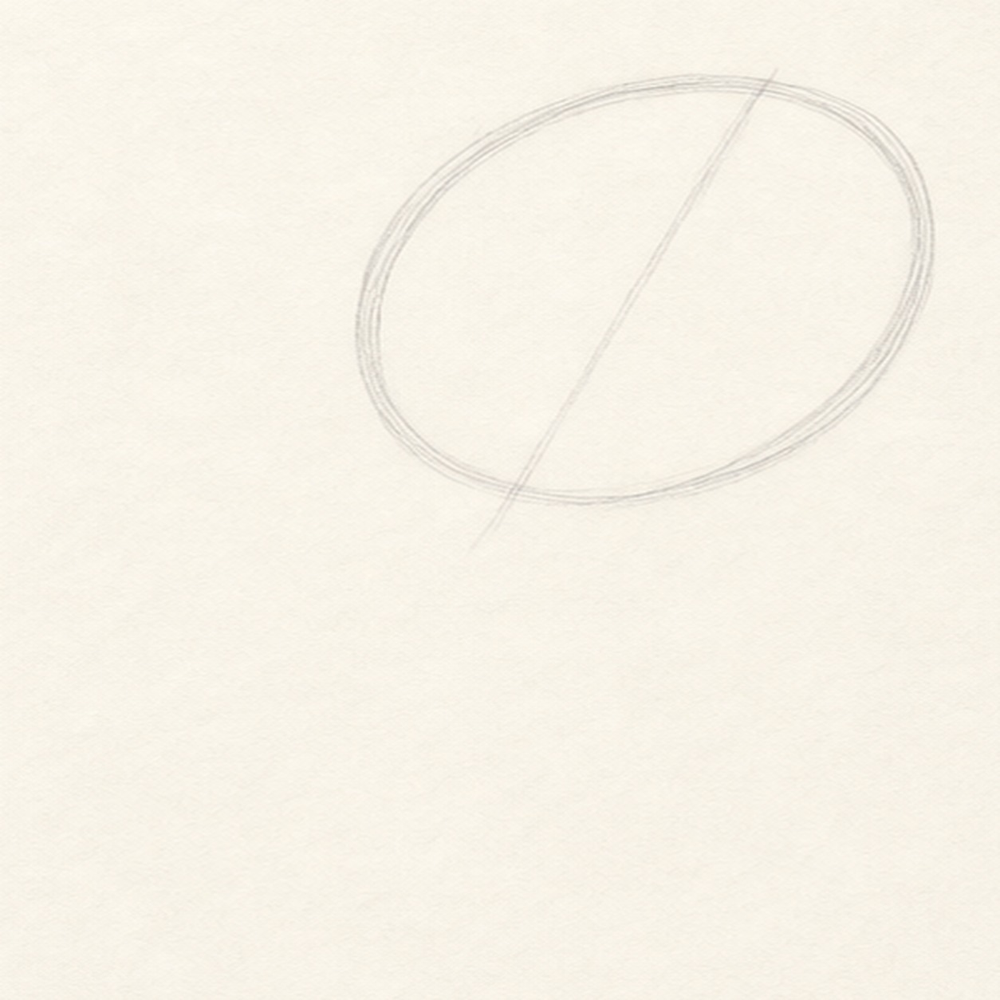
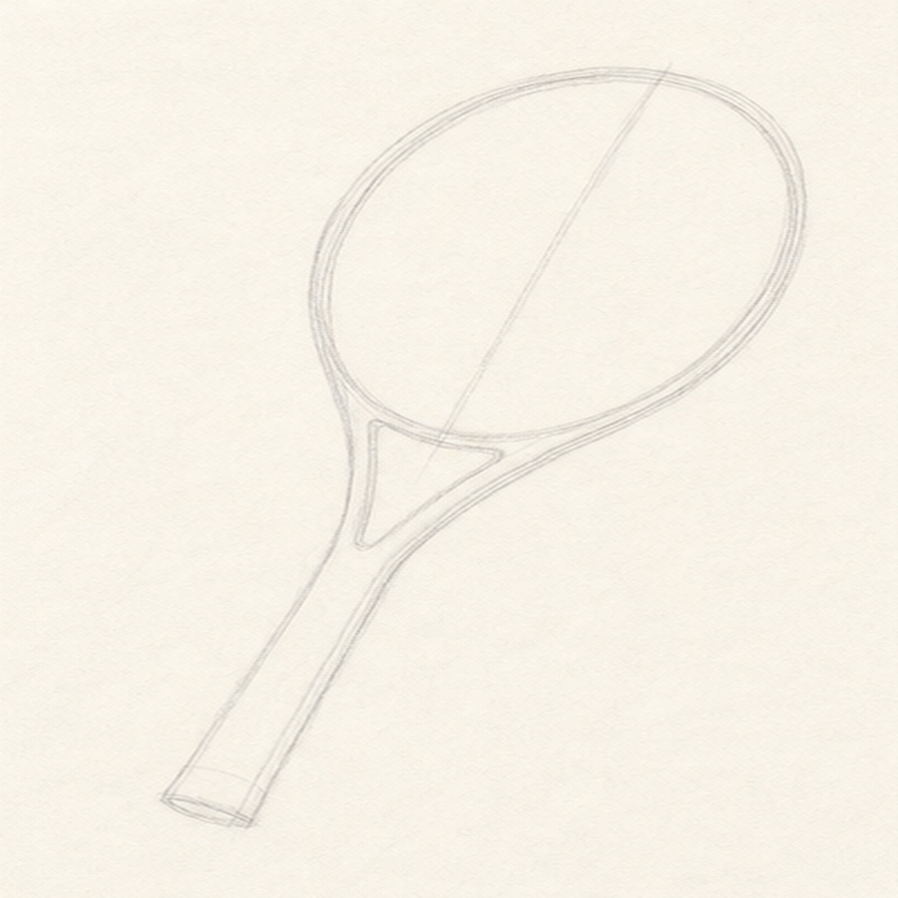
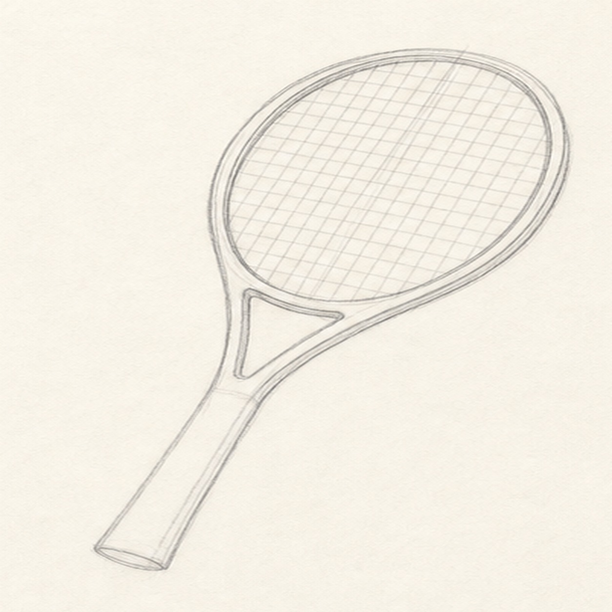
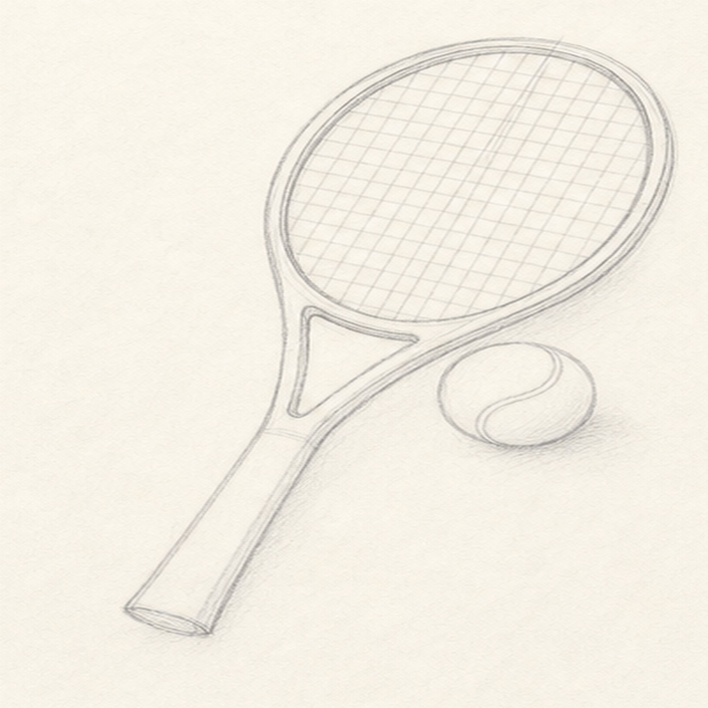
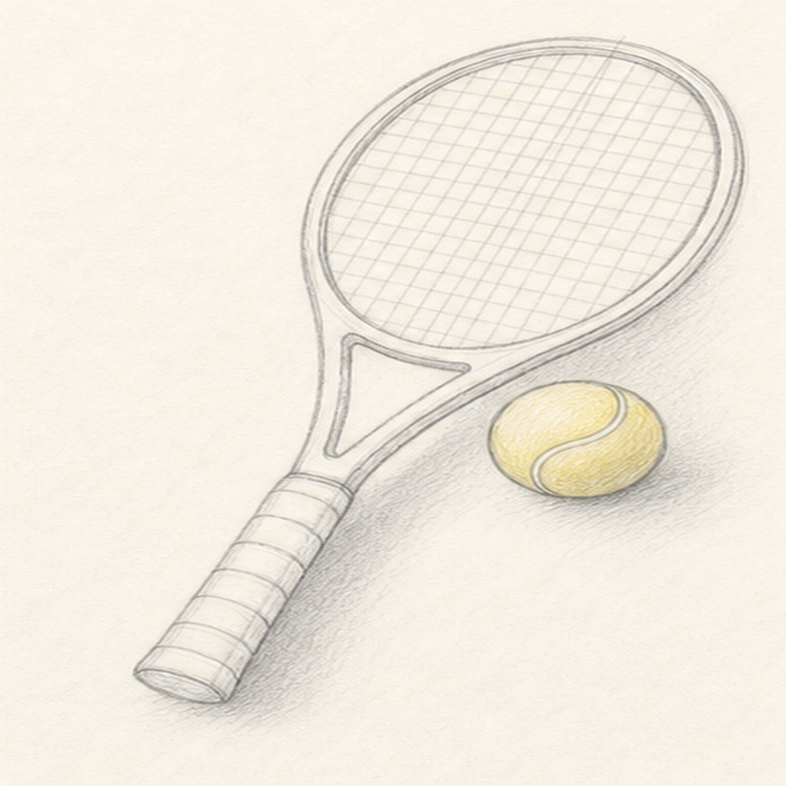

Pencil ready?
Let's draw a tennis racket and ball
Treat this as one small practice round: build the subject lightly, notice the shapes, then darken only the lines that help the finished sketch.
-
01

Place the racket oval
Draw a large tilted oval for the racket head, then add one light guide line through the middle.
Sketch tip: Make the oval taller than it is wide. A slightly imperfect shape feels more natural than a perfect template.
-
02

Add throat and handle
Pull two narrow lines down from the oval to form the throat, then extend a long handle from that opening.
Sketch tip: Let the handle follow the same tilt as the oval. That keeps the racket from looking bent.
-
03

String the racket
Draw a smaller oval just inside the head, then cross it with light vertical and horizontal string lines.
Sketch tip: Keep the strings pale at first. You can choose the cleanest ones when you darken the final sketch.
-
04

Set the ball beside it
Add a round tennis ball beside the lower racket head, then curve one seam across the ball.
Sketch tip: Leave a little space between the ball and racket so both shapes stay readable.
-
05

Add wrap and shadow
Band the handle with short wrap lines, shade a soft cast shadow, and lightly tint the ball yellow.
Sketch tip: Use the yellow gently. The graphite strings and handle should still do most of the drawing work.
-
06

Finish the court sketch
Darken the keeper contours, clarify the string grid, deepen the grip wraps, and add restrained shading to the racket, ball, and shadow.
Sketch tip: Stop while the strings are still light. Too many dark lines can make the racket head look heavy.